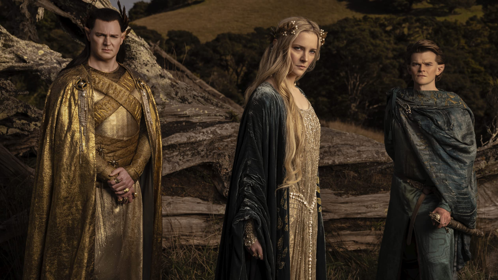

Set thousands of years before the events of The Hobbit and The Lord of the Rings, the series is based on author J. R. R. Tolkien's history of Middle-earth.
It begins during a time of relative peace and covers all the major events of Middle-earth's Second Age: the forging of the Rings of Power, the rise of the Dark Lord Sauron, the fall of the island kingdom of Númenor, and the last alliance between Elves and Men.
These events take place over thousands of years in Tolkien's original stories (Lord of the Rings/The Hobbit) but are condensed for the series.
